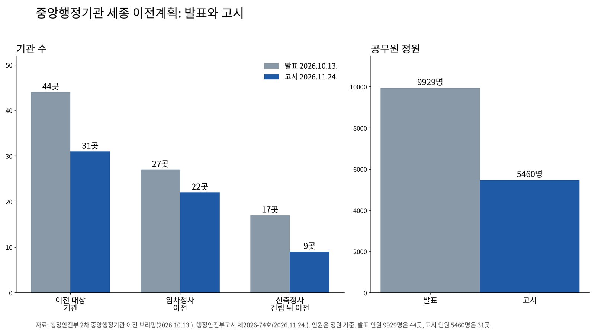

[특집 정부직할시 인천②] 고시 전 의견서 낸다던 인천시, 다음 날 고시
발표 44곳 9929명, 고시 31곳 5460명
행복도시법 조항과 재외동포청 직제 대조, 날짜순 기록
AI경제저널=김갑봉 기자 | 박찬대 인천시장은 11월 23일 인천시의회 시정질문에서 재외동포청 세종 이전 반대 의견을 아직 공식 문서로 낸 적이 없다고 답했다. 필요하면 고시 전에 인천시의 공식 의견을 문서로 전달할 계획이라고 했다. 행정안전부는 다음 날인 24일 이전계획 변경(행정안전부고시 제2026-74호)을 고시했다. 재외동포청은 임차청사로 옮기는 22곳에 들어 2027년까지 인천에서 세종으로 이전한다.

1. 발표 44곳, 고시 31곳
윤호중 행안부 장관은 10월 13일 브리핑에서 이전 대상을 44곳 9929명이라고 밝혔다. 임차청사 27곳은 2027년 중 단계적으로, 청사를 새로 지어야 하는 17곳 6934명은 2031년경 옮긴다고 했다. 상반기 우선 이전 6곳은 방송미디어통신위원회, 개인정보보호위원회, 원자력안전위원회, 국가인권위원회, 국가교육위원회, 재외동포청이었다.
고시는 31곳 5460명(2026년 9월 29일 정원 기준)을 정했다. 임차청사 22곳 1600명은 2027년까지, 신축청사 건립 뒤 9곳 3860명은 2031년까지 옮긴다. 선정 기준은 정책협의·조정과 행정기능 집적 필요성, 행복도시법 제16조의 제외 규정, 개별 법령상 소재지 규정, 기존 고시 내용 등이다.

2. 인권위와 재외동포청 분류
10월 13일 상반기 이전 6곳에 들어 있던 국가인권위원회는 고시에서 신축청사 건립 뒤 이전하는 9곳으로 옮겨 갔다. 고시는 인권위를 감사원, 고위공직자범죄수사처 등과 함께 직무상 독립기관 및 소속기관 4곳(1410명)으로 묶었다.
고시문 변경 사유란은 종전 계획에 없던 수도권 중앙행정기관 등을 추가하고 이전 방법·시기·비용을 반영하려 한다고 적었다. 고시문에 개별 기관의 시기 변경 사유는 없다. 행안부 관계자는 인권위 전원위원회가 11월 9일 독립성과 사회적 약자 접근성을 내세워 만장일치로 이전 재검토 입장문을 채택했고 국제기구도 재검토를 요구했다고 한 언론에 설명했다.
재외동포청도 10월 13일 상반기 이전 6곳에 들어 있었다. 고시는 재외동포청을 경찰청, 국립국어원 등과 함께 청 및 부 소속기관 등 8곳(2678명)으로 묶고, 임차청사로 이전하는 22곳에 넣었다.
3. 법률과 직제
행복도시법 제16조 제2항은 외교부, 통일부, 법무부, 국방부, 성평등가족부를 이전 대상에서 제외한다. 청(廳)은 열거돼 있지 않다. 고시의 31곳에도 이 다섯 부는 없다. 윤 장관은 10월 13일 다섯 부를 제외 기관에서 지우는 법 개정을 추진한다고 밝혔다. 국토교통부 국토도시실장 직무대리는 개정안 3개 정도가 국회에 계류돼 있고 나머지 기관은 법 개정 없이도 이전할 수 있다고 설명했다.
재외동포청 직제(대통령령 제36631호, 2026년 10월 1일 시행)에는 소재지 조항이 없다. 행복도시법 제16조는 이전계획을 행안부 장관이 수립해 대통령 승인을 받게 한다. 수립 전에는 공청회를 열어 국민과 관계 전문가의 의견을 듣고 관계 중앙행정기관의 장과 협의해야 한다. 계획을 바꿀 때도 이 절차를 따르되 경미한 사항은 예외다.
4. 발표에서 고시까지 날짜순
10월 13일 행안부가 이전 대상을 발표했고, 박 시장은 이날 국무회의에 참석했다. 11월 3일 행안부는 정부서울청사 별관에서 공청회를 열고 31곳 5460명 변경안을 공개했다. 변경안은 임차청사 23곳 1831명, 신축청사 8곳 3629명이었다. 법령 개정이 필요한 나머지 13곳 4469명은 개정 시기와 청사 확보 여건 등을 고려해 추가로 변경고시할 계획이라고 행안부는 밝혔다.
인천경실련 등은 공청회 날 철회 촉구 의견서를 냈고, 행안부가 국정과제 행정수도 세종 완성에 이미 반영된 정책 방향이라고 회신했다고 밝혔다. 16일 인천지역 30개 시민사회단체는 시청에서 범시민운동 출범 제안 기자회견을 열고, 시장실에 제안서를 전달하며 면담을 요청했다.
20일 시정질문에서 박 시장은 국무회의에서 재외동포청장이 두세 번, 자신이 두 번 발언했다고 답했다. 23일에는 10월 13일 국무회의 비공개 토의에서 반대 의사를 표현했다고 답했다. 정부가 고시 전에 관계기관에 아마 의견을 공식적으로 물어볼 것이라며, 그 절차에서 필요하면 반대 의견을 공식적으로 표현하겠다고도 했다. 이강구 의원이 11월 3일 공청회에 인천시에서 사무관 1명과 주무관 1명이 참석했는지 묻자 박 시장은 "네"라고 답했다.
24일 행안부가 이전계획 변경을 고시했다. 26일 인천경실련 등은 성명을 내 고시 전 공식 의견 전달 약속이 지켜지지 않았다며 박 시장에게 사과를 요구했다. 국무회의록에 반대 발언이 기록되지 않았다는 보도를 두고 발언 진위 해명과 시민사회 대표 면담도 요구했다. 16일 요청한 면담은 일정 통보가 없다고 했다.
27일 더불어민주당 정일영 의원(연수구을)은 사회관계망서비스에 글을 올려 고시 철회와 이전계획 백지화를 요구했다. 같은 날 연수구는 10월 23일부터 받은 이전 반대 구민 서명에 11월 22일 기준 13만1331명이 참여했다고 밝혔다. 이강구 의원 등 28명이 11월 3일 발의한 재외동포청 이전 계획 철회 및 존치 촉구 결의안은 12월 1일 시의회 문화복지위원회에 상정될 예정이다.
참고문헌
공식 발표자료
- "중앙행정기관 등의 이전계획 변경(행정안전부고시 제2026-74호)"(고시), 행정안전부, 2026.11.24., https://www.mois.go.kr/frt/bbs/type001/commonSelectBoardArticle.do?bbsId=BBSMSTR_000000000016&nttId=131215
- "2차 중앙행정기관 이전 브리핑"(브리핑 속기), 행정안전부(정책브리핑), 2026.10.13., https://www.korea.kr/news/policyNewsView.do?newsId=156784995
- "2차 중앙행정기관 이전, 국민 의견 듣는다"(보도자료), 행정안전부, 2026.11.3., https://www.mois.go.kr/frt/bbs/type010/commonSelectBoardArticle.do?bbsId=BBSMSTR_000000000008&nttId=130729
- "신행정수도 후속대책을 위한 연기·공주지역 행정중심복합도시 건설을 위한 특별법 제16조"(법률), 국가법령정보센터, 2026.5.12. 시행, https://www.law.go.kr/법령/신행정수도후속대책을위한연기·공주지역행정중심복합도시건설을위한특별법/제16조
- "재외동포청 직제(대통령령 제36631호)"(대통령령), 국가법령정보센터, 2026.8.28. 개정·2026.10.1. 시행, https://www.law.go.kr/법령/재외동포청직제
- "재외동포청 이전 계획 철회 및 존치 촉구 결의안(의안번호 10-184)"(의안정보), 인천광역시의회, 2026.11.3. 발의, https://record.icouncil.go.kr/bills/index.do
- "제314회 인천광역시의회(제2차정례회) 본회의회의록 제2호·제3호"(회의록), 인천광역시의회사무처, 2026.11.20.·11.23., https://record.icouncil.go.kr/assem/viewer.do?cdUid=51109 , https://record.icouncil.go.kr/assem/viewer.do?cdUid=51096
- "인천시·재외동포청, 재외동포교육문화센터 조성 업무협약 체결"(보도자료), 인천광역시 재외동포협력과, 2026.10.22., https://www.incheon.go.kr/IC010205/view?repSeq=DOM_0000000015805777
- "연수구, 재외동포청 세종 이전 반대 서명 13만 1,331명 참여"(보도자료), 인천광역시 연수구 자치행정과, 2026.11.27., https://www.yeonsu.go.kr/main/community/notify/report.asp?page=v&seq=29723
- "[성명] 박찬대 시장은 재외동포청 이전 사과, 공공기관 이전·통폐합 저지해야!"(성명), 인천경실련, 2026.11.26., https://ccej.or.kr/posts/1RtEzMK
- "[보도자료]<재외동포청 인천 유치 100만인 서명지> 반환 촉구 및 인천 공공기관 이전ㆍ통폐합 저지 여야민정 범시민운동 제안!"(보도자료), 인천경실련, 2026.11.12., https://ccej.or.kr/posts/lat5G9D
언론 보도
- "오락가락하는 행정기관 지방 이전 기준"(취재수첩), 한국경제, 2026.11.25., https://www.hankyung.com/article/2026112502601
- "재외동포청 세종행 확정에 인천 정치권 반발", 인천일보, 2026.11.27., https://www.incheonilbo.com/news/articleView.html?idxno=1337994
사진 출처
- [사진1] 박찬대 인천시장 페이스북 사진(인천광역시의회 본회의장 발언 장면, 소장님 제공)
- [사진2] 연구소 도표(자료 행정안전부 브리핑 2026.10.13., 고시 2026.11.24.)
※ 이 기사는 AI 프로그램 클로드를 활용해 작성했습니다.
관련기사
- [특집 정부직할시 인천①] 반대 문서 0건, 재외동포청 세종행
- [인천해양주권⑦] 민주당 인천 국회의원 12명 또 침묵 방관
- [인천해양주권⑬] 효과 분석 없는 항만공사 통합, 해법은 협력과 분권
- [칼럼] 노무현 정신 계승하되 정책은 그만, 5극3특 권역별 공항공사체제로
저작권자 © AI경제저널 무단전재 및 재배포, AI학습 및 활용 금지